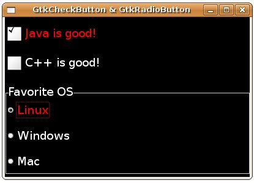

| GtkStyle是GTK與GDK之間一個重要的抽象層，它允許您自訂元件的外觀樣式，而不用直接親自處理GDK的繪圖，GtkStyle為GtkWidget的成員之一： typedef struct {
/* The style for the widget. The style contains the * colors the widget should be drawn in for each state * along with graphics contexts used to draw with and * the font to use for text. */ GtkStyle *GSEAL (style); .... } GtkWidget; 如說明文件中所稱的，GtkStyle包括了元件的顏色資訊，以及每個狀態下如何繪製的訊息： typedef struct _GtkStyle GtkStyle;
struct _GtkStyle { GtkStyleClass *klass; GdkColor fg[5]; GdkColor bg[5]; GdkColor light[5]; GdkColor dark[5]; GdkColor mid[5]; GdkColor text[5]; GdkColor base[5]; GdkColor black; GdkColor white; GdkFont *font; GdkGC *fg_gc[5]; GdkGC *bg_gc[5]; GdkGC *light_gc[5]; GdkGC *dark_gc[5]; GdkGC *mid_gc[5]; GdkGC *text_gc[5]; GdkGC *base_gc[5]; GdkGC *black_gc; GdkGC *white_gc; GdkPixmap *bg_pixmap[5]; /* private */ gint ref_count; gint attach_count; gint depth; GdkColormap *colormap; GtkThemeEngine *engine; gpointer engine_data; GtkRcStyle *rc_style; GSList *styles; }; 您可以使用GtkWidget的gtk_widget_style_get()來取得GtkStyle，使用gtk_widget_set_style()函式設定GtkStyle等，一個使用的範例在 GtkColorButton 與 GtkColorSelectionDialog 可以找到，在GtkStyle定義中您可以發現的是，它們都是有五個元素的陣列，這是因為可以區分為五個不同狀態下的顯示顏色：
GtkStyle的樣式可以撰寫在一個資源檔案中，例如寫一個.rc檔如下：
style "widgets" {
語法上非常簡單，每個樣式可有一個名稱，並指定要修改的屬性，樣式之間還可以繼承，例如上面的設定中，"labels" = "widgets"表示"labels"繼承 "widgets"的屬性設定，最底下是樣式名稱的取名，而最後一行，"Gtk*Button"表示設定Gtk開頭而Button結尾的類別名稱都符合。 可以將這個.rc檔案套用至 GtkCheckButton 與 GtkRadioButton 的範例中，只要在gtk_init()後寫下gtk_rc_parse()函式並指定樣式檔案： .... gtk_init(&argc, &argv); gtk_rc_parse("styles.rc"); .... 重新編譯並執行程式，一個執行範例如下所示：  |